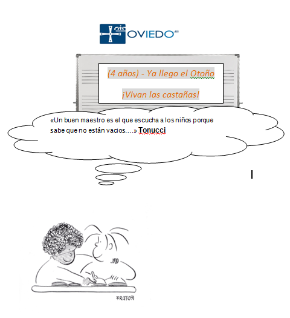
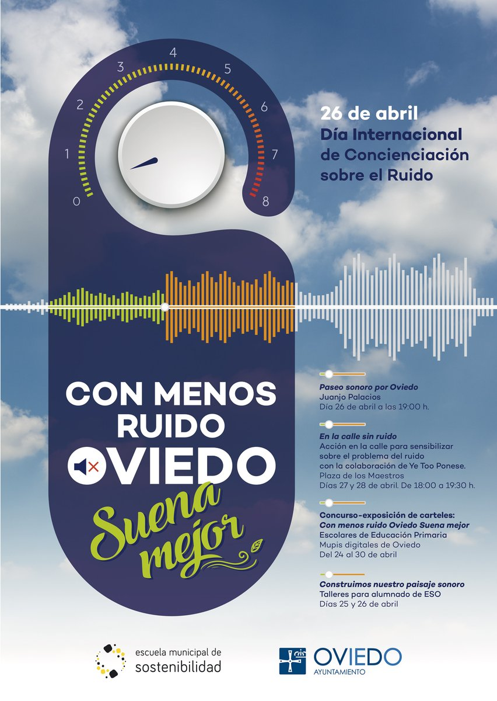
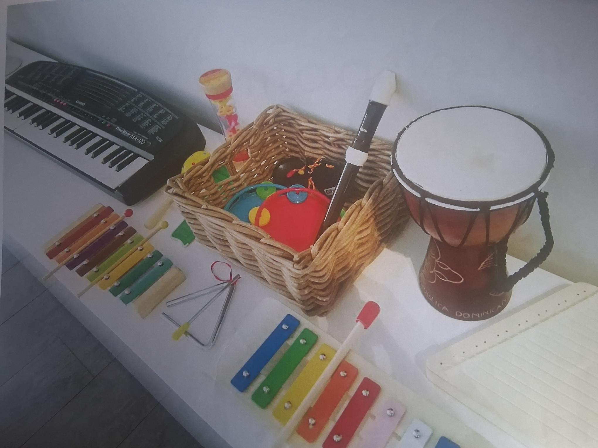
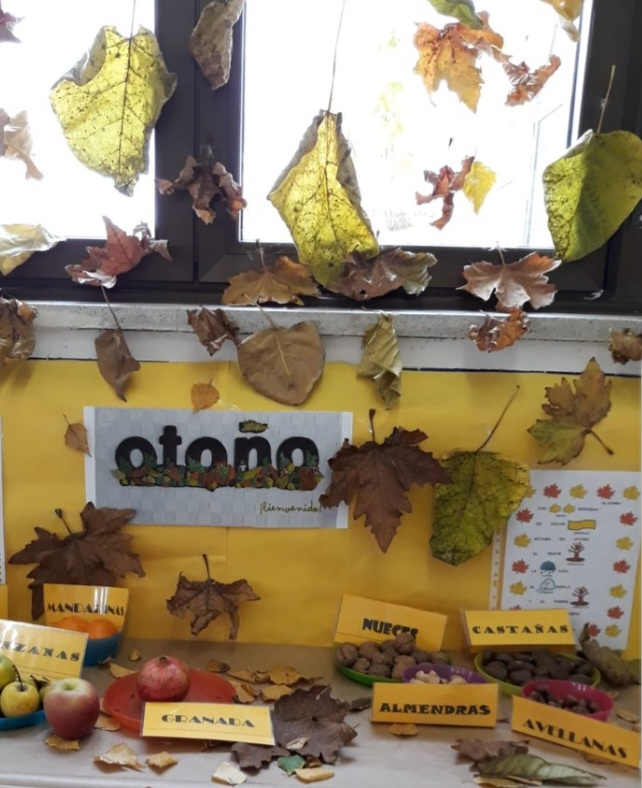
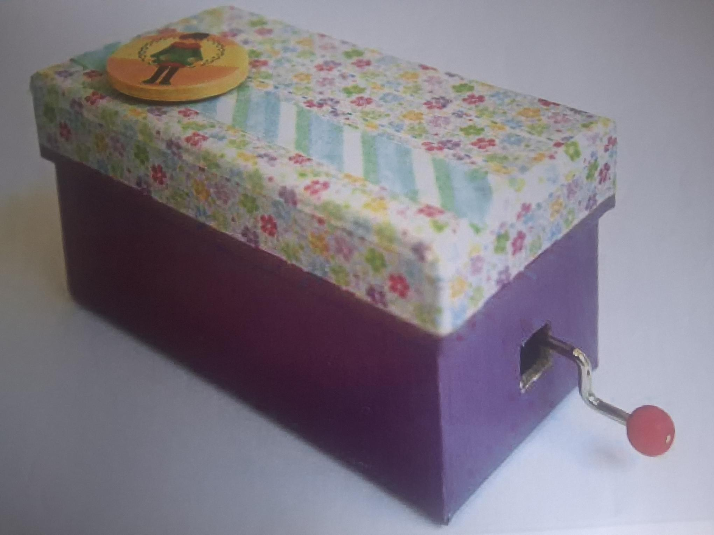
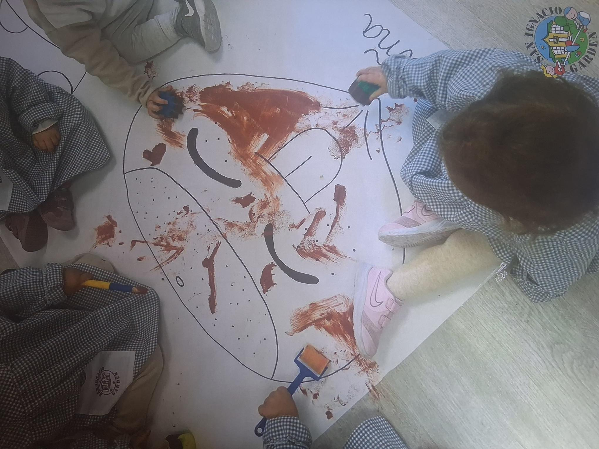
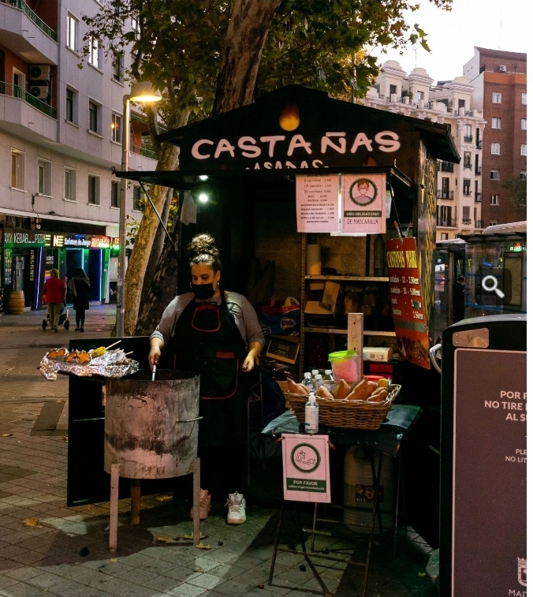
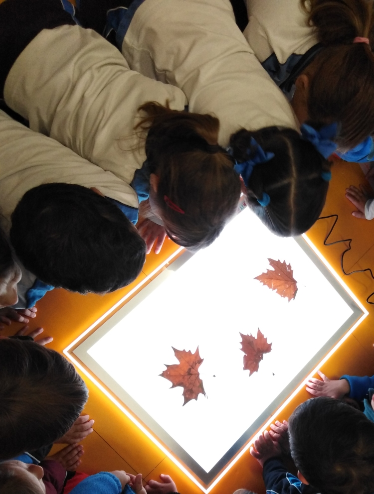
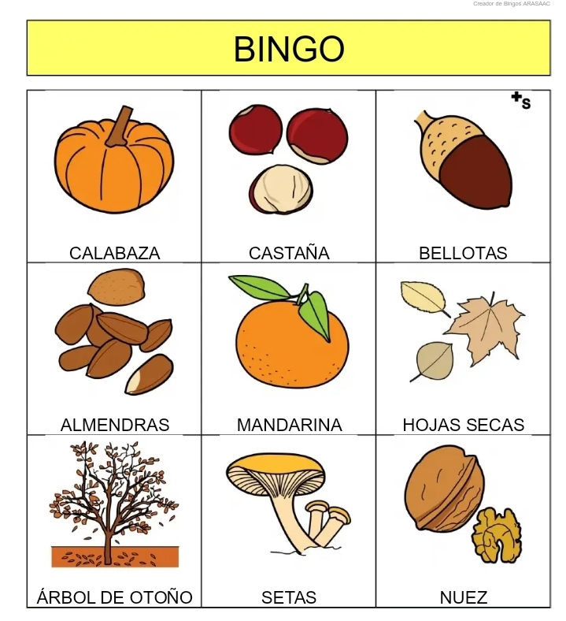

"Sda Propuesta para el alumnado"
Situación de Aprendizaje ¡Vivan las castañas!-4años


A la hora de trabajar con el alumnado de estas edades prestaré especial atención:
- A principios derivados de sus necesidades como:

Así nuestra aula de infantil se dedica este curso a la música, así la mascota del aula será la batuta DO-Re-Mi que nos acompañará a lo largo de todas las Unidades de Programación.
.jpg)
Mi relación con ellos será afectiva y cercana, dedicándoles todos los días en la asamblea unos momentos de saludo y afectividad cantando a la hora del saludo.



Primero buscaremos un lugar en el aula donde ubicar nuestra exposición que esta compuesta por los distintos materiales realizados en las actividades durante la Sda una por sesión (7 sesiones).
Actividad 1 La realización de un mural/ panel de las características generales del castaño y de la castaña…
Actividad 2 Realizar una castaña, erizo con plastilina, arcilla, etc.
Actividad 3 Salidas al entorno: ir al parque a visitar a la vendedora de castañas y paseo otoñal (recogida de hojas secas y alguna castaña) Actividad 4 Cantar la canción “Vivan las Castañas”.
Actividad 5 Bingo del otoño Actividad
Actividad 6 Poesía de la castañera (infografía y Podcast)
Actividad 7: Preparamos la exposición
Observamos imágenes del castaño y de la castaña.
Conversamos sobre su forma, su color y dónde las podemos encontrar.
También visionamos los siguientes videos
Después entre toda la clase realizamos un mural o panel otoñal en el que colocamos:
El árbol del castaño
El erizo
La castaña
Cada niño y cada niña participa según sus posibilidades.

Hoy vamos a crear castañas y erizos utilizando plastilina, arcilla u otros materiales. (Visionado de video tutorial)
Tocamos, aplastamos, damos forma y exploramos con nuestras manos.
Respetamos el ritmo de cada persona y valoramos todas las creaciones.
Guardaremos nuestras castañas para la exposición otoñal.
Salimos a dar un paseo otoñal por el entorno cercano. Parque San Francisco (Oviedo) espectacular durante el Otoño y que tiene algún castaño.
Antes de la salida: Escuchamos las normas que debemos cumplir durante la salida.
Durante la salida: _(3).jpg)
Visitamos a la vendedora de castañas.
Observamos los colores de las hojas.
Recogemos hojas secas y alguna castaña..
Aprendemos a cuidar la naturaleza y a respetar el entorno.
Después de la salida:
Observamos las hojas y las colocamos en la exposición.

Escuchamos la canción “Vivan las castañas”.
Aprendemos la canción poco a poco y la cantamos todas y todos juntos. Aprovechamos a ensayarla y cantarla todos los días en la hora y rincón de la música.
Acompañamos la canción con gestos, movimientos y palmas suaves.
Vamos a jugar al Bingo del otoño.
En el tablero del juego aparecen imágenes junto con sus palabra correspondiente. Así en esta actividad aprendemos vocabulario nuevo. relativo a la Situación de aprendizaje.

APRENDEMOS NUEVO VOCABULARIO:
Diccionario de Términos: árbol de otoño, almendras, bellotas, calabaza, castaña, hojas secas, mandarina, nuez y setas.
Escuchamos la poesía de la castañera.
Aprendemos algunas palabras y frases importantes.
Grabamos la poesía en un podcast, con ayuda de la maestra.
YO SOY LA CASTAÑERA,
CASTAÑAS TE VENDO YO
SON RICAS Y REDONDITAS
TODAS DE COLOR MARRÓN.
TE PUEDO VENDER UNA,
TE PUEDO VENDER DOS,
CON ELLAS TE REGALO
ALEGRÍA E ILUSIÓN.
CUANDO LLEGA EL OTOÑO
SALIMOS A PASEAR
Y CON LAS RICAS CASTAÑAS
TUS MANOS CALENTARÁS.
También realizamos y observamos una infografía visual con imágenes del otoño y la castaña.
Estos materiales formarán parte de nuestra exposición.
Organizamos todo lo que hemos aprendido para preparar la exposición otoñal de la castaña.
Colocamos:
El mural
Las castañas y erizos
Las hojas recogidas
La infografía
El podcast
Invitamos a las familias a otros alumnos a que visiten esta ex`posición..
La concreción de la respuesta a las diferencias individuales tomará como referencia el marco del Diseño Universal para el Aprendizaje (DUA), tanto en las Unidades de Programación y Situaciones de Aprendizaje, que se programen en el aula. Partiendo de esta premisa, en este apartado se incluirán aquellas medidas de atención a las diferencias individuales que permitan la personalización del aprendizaje del alumnado del grupo clase. Estas medidas deberán dar respuesta a los distintos ritmos, situaciones y estilos de aprendizaje. Para la concreción de estas actuaciones, se tomará como referencia la normativa legal vigente, así como el Programa de Atención a la Diversidad del centro.
Multiples formas de implicación (Proporcionar diferentes formas de motivación del alumnado)
-Dar a conocer las metas y los objetivos de aprendizaje.
-Promover expectativas y creencias que optimicen la motivación.
-Utilizar el feed back como estrategia de motivación.
-Potenciar la autoevaluación y coevaluación del alumnado
Múltiples formas de representación (Presentar la información de diferentes soportes y formatos)
-Ofrecer los contenidos diversos de las diferentes situaciones de aprendizaje utilizando: referentes visuales gráficos como los pictogramas
-Gamificar la situación de aprendizaje
-Clarificar sintaxis y simbología.
-Banco de actividades graduadas por niveles de dificultad
Múltiples formas de expresión (ofrecer diferentes opciones para expresar y demostrar lo aprendido)
-incluir pruebas orales, escritas y competenciales
-Permitir entregar las producciones en diferentes soportes: papel, digital…
-hacer un seguimiento de los avances.
Se justificará la integración de los apoyos (profesorado especializado de PT y/o AL, docencia compartida u otros profesionales que intervienen en segundo ciclo de infantil.
Teniendo en cuenta la base para la Atención a la diversidad que ya he explicado, y basándaome en el enfoque DUA, en esta SA, he diseñado unas actividades flexibles que pueden adaptarse a los diferentes ritmos de trabajo del alumnado, también en el aula se dispondré de un rincón con actividades de ampliación y refuerzo para el alumnado que más lo necesite.
Actividades multisensoriales: como el huerto del colegio, rincón de la música y rincón del relax.
Docencia compartida en el producto final: “ Exposición en clase”
La técnica principal de evaluación, observando sus conversaciones, los resultados de sus trabajos, el ritmo en la realización de los mismos, la evolución de su aprendizaje, la participación en el aula. Registraré un breve resumen en el diario de clase de todo el desarrollo de cada jornada, también iré anotando a lo largo de los diferentes días en el registro de tutorías, los intercambios que hubiese realizado con las familias de mis alumnos y alumnas.
¿CUÁNDO VOY A EVALUAR? Antes de iniciar el proyecto realizaré una evaluación inicial para comprobar los conocimientos previos que poseen los alumnos, de tal manera que sus esquemas de conocimientos previos puedan conectar con los nuevos aprendizajes, para que se realice el aprendizaje significativo. Lo realizaremos en la asamblea después de presentar algún motivo motivador para el tema.
Día a día, a modo de evaluación continua, se realizará una observación directa y continua del trabajo en el aula, lo que me permitirá ir reajustando el proceso de enseñanza-aprendizaje en cada momento si fuese necesario y las observaciones se irán registrando en una ficha individual de cada alumno, en la que se recogen si el alumno va adquiriendo los distintos tipos de contenido de la Sda, cómo se produce el aprendizaje, es decir, (si inmediatamente, con apoyo, si no se produce…). Finalmente se comprobará si el alumno o alumna ha adquirido los distintos tipos de contenidos, que permitirán alcanzar los objetivos propuestos, o si aún hay alguno que esté en desarrollo. También voy a iniciar a mis alumnos en procesos de coevaluación. Tal y cómo explique anteriormente con el dossier. Una vez terminada Sda, entre todos vamos a manifestar qué es lo que más nos gustó, lo que más difícil nos pareció, qué trabajos quedaron más bonitos, qué se puede mejorar.
Y en otro momento les voy a pasar una lámina con imágenes representativas de los momentos y actividades más importantes del proyecto, ellos tendrán que marcar de color aquellas imágenes en las que encuentran las actividades que más disfrutaron.
¿QUÉ VOY A EVALUAR?
Los criterios de evaluación de referencia son: el alumno es capaz de:
Proponer ideas para realizar actividades de la Sda de la castaña
Terminar las tareas encargadas para Sda.
Dar creativas soluciones a los problemas planteados para estudiar Sda.
Ayudar a un compañero terminar su tarea.
Realizar preguntas que aporten ideas para investigar sobre Sda.
Trabajar en equipo correctamente respetando a sus compañeros.
Explicar alguna diferencia entre la ciruela y la castaña.
Caracterizar a una vendedora de castañas.
Nombrar algunas diferencias de las plantas de otoño y las de verano.
Explicar algún cuento narrado durante el proyecto.
Escribir palabras y frases trabajadas en este proyecto.
Leer palabras y frases relacionadas con el proyecto.
Desarrollar la creatividad a través de diferentes técnicas artísticas de la unidad.
Presentar alguna producción musical del otoño como obra de arte.
EVALUACIÓN DEL PROCESO DE ENSEÑANZA
No sólo se evaluarán los aprendizajes adquiridos por los niños/as, tomando como regencia los criterios de evaluación establecidos para este proyecto, sino también nuestra propia práctica docente para reajustar el proceso de enseñanza-aprendizaje cuando sea necesario. También llevaré a cabo una REFLEXIÓN ACERCA DE:
- ¿He preparado el tema de forma atractiva?
- ¿He despertado curiosidad por el tema?
- ¿He ofrecido el material adecuado?
- ¿He creado un clima agradable en el aula?
- ¿He fomentado el trabajo en equipo?
- ¿He desarrollado la capacidad de escucha?
- ¿He tenido en cuenta las capacidades de los alumnos?
En cuanto al espacio, evaluaré, si he favorecido la comunicación, si se usan todos los espacios disponibles, si los materiales de las distintas zonas están al alcance de los niños/as, si se respetan las normas establecidas, si han funcionado positivamente las zonas creadas para este proyecto, si los espacios están ordenados y son armónicos, si permiten el movimiento, la manipulación y acción.
También evaluaré el final del proyecto si los objetivos, contenidos y actividades, se han adecuado ala nival de los distintos alumnos, si se han secuenciado, si he hecho modificaciones, etc. En cuanto a la metodología evaluaré también si ha sido motivadora, si favorecí los agrupamientos flexibles, actividades en gran grupo, grupos pequeños, actividades individuales, si tuve en cuenta los principios psicopedagógicos.
Si la organización espacio-temporal fue la adecuada, si la interacción alumno-maestro. Si hubo buena coordinación entre el profesorado, si hubo participación de padres en la unidad tratada y se implicaron en el proceso de enseñanza-aprendizaje.
También se puede pedir la opinión de un observador externo para evaluar de manera objetiva el proceso de enseñanza aprendizaje, que puede ser otro maestro o maestra del ciclo.
Procedimientos o técnicas:
Entrevista X Observación sistemática X Intercambios orales X Autoevaluación X Co-evaluación X Heteroevaluación X Análisis de producciones orales y escritas del alumnadoX
Actividad de evaluación
Participación diaria X Asamblea y puesta en común
Instrumentos:
Lista de control X Diario de clase X
LISTA DE CONTROL
Situación de Aprendizaje: ¡Vivan las castañas!
Etapa: Educación Infantil – 2.º ciclo (4 años)
Alumno/a: ____________________________
Fecha: ____________________________
ÁREA 1. CRECIMIENTO EN ARMONÍA
☐ Participa activamente en actividades de Sda."Vivan las castañas"
☐ Expresa emociones relacionadas con el otoño.
☐ Muestra autonomía en rutinas asociadas a la actividad.
☐ Respeta normas y turnos.
☐ Coopera y comparte materiales.
ÁREA 2. DESCUBRIMIENTO Y EXPLORACIÓN DEL ENTORNO
☐ Reconoce la castaña como fruto del otoño.
☐ Identifica el castaño como árbol.
☐ Describe características de la castaña.
☐ Clasifica y agrupa castañas.
☐ Cuenta castañas en situaciones funcionales.
☐ Reconoce el magüestu como tradición cultural.
ÁREA 3. COMUNICACIÓN Y REPRESENTACIÓN DE LA REALIDAD
☐ Comprende consignas orales.
☐ Amplía vocabulario relacionado con el otoño.
☐ Se expresa oralmente sobre la experiencia.
☐ Participa en canciones y cuentos tradicionales.
☐ Realiza producciones plásticas relacionadas.
☐ Utiliza el cuerpo y la música como forma de expresión.
ACTITUD ANTE EL APRENDIZAJE
☐ Muestra curiosidad e interés.
☐ Mantiene la atención.
☐ Disfruta del aprendizaje.
☐ Persevera ante pequeñas dificultades.
VALORACIÓN GLOBAL
☐ Iniciado ☐ En proceso ☐ Adecuado ☐ Muy adecuado
Fortalezas observadas:
______________________________________________________
Aspectos a reforzar:
______________________________________________________
DIARIO DE CLASE ·
Situación de Aprendizaje: ¡Vivan las castañas!
Fecha
Grupo
Docente
____________________
____________________
____________________
ACTIVIDADES DEL DÍA
☐ Asamblea sobre el otoño y las castañas
☐ Manipulación y observación de castañas
☐ Conteo / clasificación de castañas
☐ Cuento o canción del magüestu
☐ Actividad plástica
☐ Juego simbólico o motor
Otros: ____________________________________________
OBSERVACIÓN GENERAL
Participación: ☐ Alta ☐ Media ☐ Baja
Aspectos destacados:
☐ Interés
☐ Vocabulario
☐ Convivencia
☐ Autonomía
Observaciones breves:
______________________________________________
RÚBRICA DE EVALUACIÓN
Situación de Aprendizaje: ¡Vivan las castañas!
Participación y actitud
☐ 4: Participa activamente con entusiasmo.
☐ 3: Participa habitualmente.
☐ 2: Participación irregular.
☐ 1: Apenas participa.
Lenguaje y comunicación
☐ 4: Usa vocabulario específico con frases completas.
☐ 3: Se expresa adecuadamente.
☐ 2: Usa palabras sueltas.
☐ 1: Presenta dificultades.
Conocimiento del entorno
☐ 4: Reconoce castaña, castaño y otoño.
☐ 3: Reconoce la castaña.
☐ 2: Necesita ayuda.
☐ 1: No identifica.
Pensamiento lógico-matemático
☐ 4: Cuenta y clasifica autónomamente.
☐ 3: Cuenta con apoyo.
☐ 2: Necesita ayuda constante.
☐ 1: No logra las tareas.
Convivencia
☐ 4: Coopera y respeta normas.
☐ 3: Respeta normas.
☐ 2: Necesita recordatorios.
☐ 1: Dificultades frecuentes.
Expresión artística
☐ 4: Muestra creatividad.
☐ 3: Participa con interés.
☐ 2: Necesita ayuda.
☐ 1: Apenas participa.
Este material ha sido elaborado por María Rosario Díaz Peral y se distribuye bajo licencia Creative Commons
Obra publicada con Licencia Creative Commons Reconocimiento Compartir igual 4.0